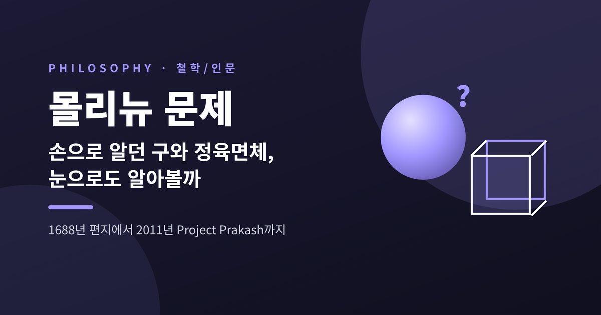
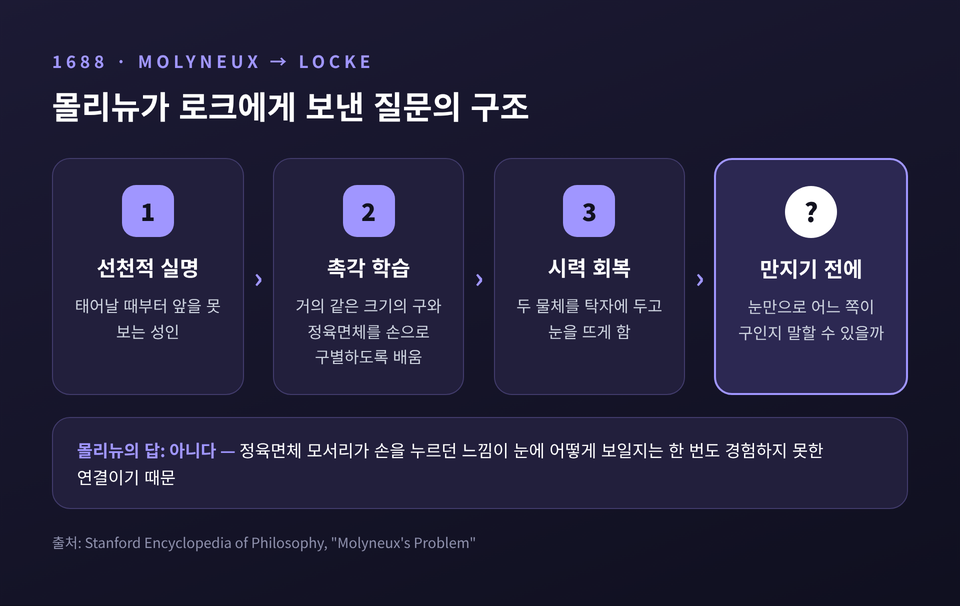
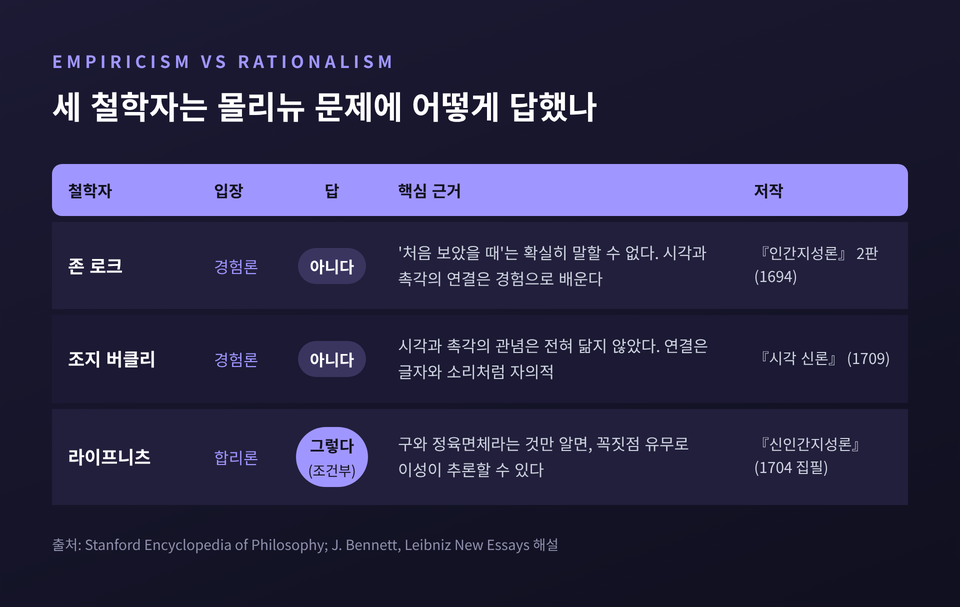
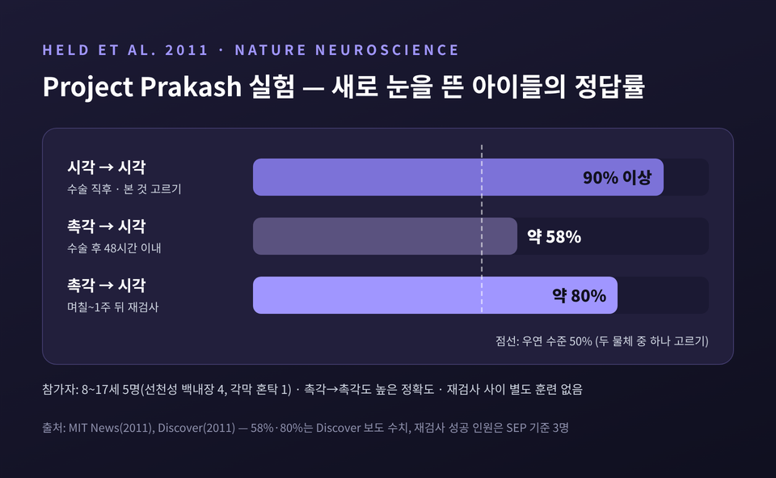
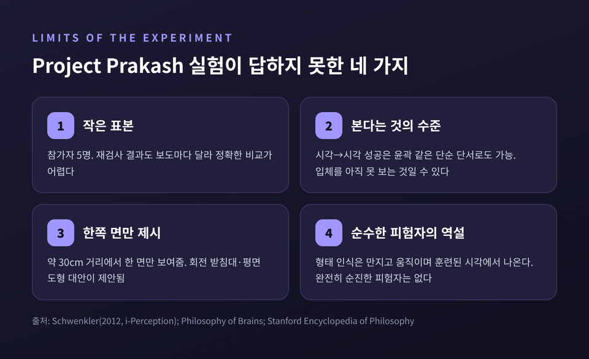
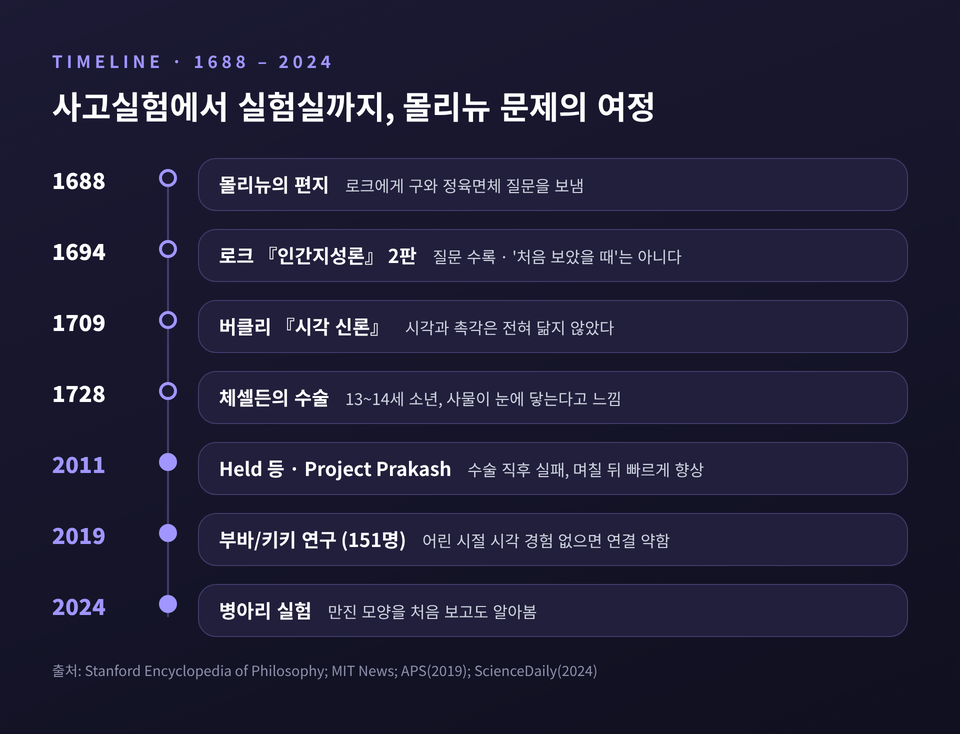

몰리뉴 문제 — 손으로 알던 구와 정육면체, 눈으로도 알아볼까

오늘은 철학사에서 가장 오래 살아남은 사고실험 가운데 하나, '몰리뉴 문제'를 다뤄 보려 합니다. 앞을 못 보던 사람이 시력을 되찾았을 때, 손으로만 알던 구와 정육면체를 눈으로 구별할 수 있을까요. 먼저 결론부터 말씀드리면, 340년 가까이 지난 지금도 이 질문에는 깔끔한 답이 없습니다. 다만 그 답을 찾는 과정에서 우리는 '감각이 어떻게 서로를 알아보는가'에 대해 꽤 많은 것을 배웠습니다.
■ 한 통의 편지에서 시작된 질문
1688년 7월 7일, 아일랜드 더블린의 자연철학자 윌리엄 몰리뉴가 존 로크에게 편지를 보냅니다. 질문은 단순했습니다.
태어날 때부터 앞을 못 본 사람이 있습니다. 그는 거의 같은 크기의 구와 정육면체를 손으로 만져 구별하는 법을 배웠습니다. 이제 두 물체를 탁자 위에 두고, 그 사람이 시력을 되찾았다고 해 봅시다. 만지기 전에, 눈만으로 어느 쪽이 구인지 말할 수 있을까요.
로크는 이 첫 편지에 답하지 않았습니다. 5년 뒤인 1693년, 서신을 주고받는 사이가 된 몰리뉴가 질문을 다듬어 다시 보냈고, 이번에는 로크가 "세상에 공표될 만한 재치 있는 문제"라며 반겼습니다. 이 질문은 1694년 『인간지성론』 제2판(2권 9장 8절)에 실려 널리 퍼집니다.
덧붙일 사실이 하나 있습니다. 몰리뉴의 아내는 결혼 첫해에 시력을 잃었습니다. 이 질문이 단순한 머리싸움만은 아니었으리라 짐작하게 되는 대목입니다.
몰리뉴 자신의 답은 "아니다"였습니다. 그 사람은 구와 정육면체가 손에 어떻게 닿는지는 배웠습니다. 하지만 손바닥을 고르지 않게 누르던 정육면체의 모서리가 눈에는 어떻게 보이는지, 그 연결은 한 번도 경험한 적이 없다는 것입니다.

■ 로크와 버클리, 그리고 라이프니츠의 엇갈린 답
이 질문이 유명해진 이유는 답이 곧 철학적 입장을 드러내기 때문입니다. 지식이 경험에서 온다고 보는 경험론과, 이성이 경험에 앞서 무언가를 쥐고 있다고 보는 합리론이 여기서 정면으로 갈립니다.
로크 — "처음 보았을 때는 확실히 말할 수 없다"
로크는 몰리뉴에게 동의했습니다. 시력을 되찾은 사람은 '처음 보았을 때(at first sight)' 어느 쪽이 구인지 확실히 말할 수 없을 것이라고 썼습니다. 보이는 것과 만져지는 것 사이의 연결은 경험으로 배우는 것이라는 경험론의 전형적인 답입니다. 눈여겨볼 단어는 '처음'입니다. 시간이 지나면 배울 수 있다는 여지를 남겨 둔 셈입니다.
버클리 — "시각과 촉각은 아예 다른 언어다"
조지 버클리는 1709년 『시각 신론』에서 한 걸음 더 나아갑니다. 그는 시각의 관념과 촉각의 관념 사이에 유사성이 전혀 없다고 보았습니다. 만약 '보이는 정사각형'과 '만져지는 정사각형'이 같은 종류라면, 맹인은 정사각형 면이라는 틀림없는 표지로 정육면체를 바로 알아볼 것입니다. 그러니 둘은 다른 종류여야 한다는 논리입니다. 버클리는 보이는 도형이 만져지는 도형을 나타내는 방식을, 글자가 소리를 나타내는 방식에 빗댔습니다. 처음 맺어지는 연결은 자의적이고, 오직 경험이 그것을 굳힌다는 것입니다.
라이프니츠 — "조건만 맞으면 이성으로 알 수 있다"
합리론자 라이프니츠는 『신인간지성론』에서 '그렇다'고 답했습니다. 다만 조건을 붙였습니다. 그 사람이 두 물체가 구와 정육면체라는 사실만은 미리 안다고 해 봅시다. 그러면 이것은 추론할 수 있는 문제가 됩니다. 구에는 손끝에 걸리는 뾰족한 점이 없고, 정육면체에는 꼭짓점 여덟 개가 있습니다. 이 차이는 눈에 보이는 모습에도 드러나야 하므로, 기하학적 이치를 따라가면 맞힐 근거가 생긴다는 것입니다. 라이프니츠는 로크의 '처음 보았을 때'라는 단서도 받아들이지 않았습니다. 시력이 충분히 회복될 시간을 줘야 공정하다는 이유였습니다. 그러면서도 실제로 막 눈을 뜬 사람은 낯섦에 눈이 부시고 혼란스러울 것이라고 인정했습니다. 원리상의 가능성과 현장의 반응을 구분한 셈입니다.

■ 1728년, 처음으로 눈을 뜬 소년
사고실험은 곧 실제 사례를 만나게 됩니다. 1728년 영국 외과의 윌리엄 체셀든은 『철학회보』에 한 소년의 이야기를 보고합니다. 태어날 때부터, 혹은 기억이 없을 만큼 어릴 때부터 앞을 못 본 소년이 13~14세 무렵 백내장 수술을 받았습니다. 흐려진 수정체를 시야 밖으로 밀어내는 '압하술'이었습니다.
소년의 반응은 철학자들의 상상보다 훨씬 낯설었습니다.
- 처음에는 모든 사물이 자기 눈에 닿아 있다고 생각했습니다. 피부에 무언가 닿듯이 말입니다.
- 모양이나 크기가 달라도 사물을 서로 구별하지 못했습니다.
- 고양이와 개를 자주 헷갈렸고, 묻기가 부끄러웠습니다. 어느 날 고양이를 손으로 잡아 찬찬히 만져 본 뒤 내려놓으며 말했습니다. "그래, 야옹아. 다음엔 널 알아볼 거야."
- 어머니 시계에 달린 아버지의 작은 초상화를 보고, 닮은 것은 알았지만 그 큰 얼굴이 어떻게 이 작은 곳에 들어가는지 놀라워했습니다.
볼테르와 콩디야크 같은 이들은 이 보고를 '보는 법은 배워야 한다'는 증거로 받아들였습니다. 반면 디드로와 라메트리는 고개를 저었습니다. 수술 직후 눈이 제대로 기능했는지, 의사가 유도 질문을 하지 않았는지 알 수 없다는 것입니다. 더 근본적인 반론도 나왔습니다. 백내장 환자는 애초에 완전한 맹인이 아니며, 완전한 실명은 고칠 수 없으니 이런 사례로는 질문을 제대로 시험할 수 없다는 지적입니다.
예전에는 몰리뉴 문제가 서재 안의 논리 게임이었습니다. 체셀든 이후로는 수술실과 실험실의 문제가 되었습니다. 그리고 그때부터 '실험을 어떻게 설계해야 공정한가'라는 새 질문이 따라붙습니다.
■ 2011년 Project Prakash — 마침내 실험대에 오르다
그로부터 약 280년 뒤, 이 질문은 인도에서 다시 실험대에 오릅니다. MIT의 파완 신하는 2004년 'Project Prakash'를 시작했습니다. 산스크리트어로 '빛'이라는 뜻입니다. 치료할 수 있는 실명 아동의 시력을 되찾아 주고, 동시에 뇌가 처음 보는 법을 어떻게 배우는지 연구하는 프로젝트입니다. 2011년 보도 당시 2만4천 명 넘는 아이를 검진하고 약 700명을 치료했습니다.
리처드 헬드와 신하 연구팀은 2011년 4월 『네이처 뉴로사이언스』에 「새로 보게 된 이들은 본 것과 만진 것을 맞추지 못한다」라는 논문을 발표합니다.
실험은 이렇게 진행됐습니다.
- 참가자: 8~17세 다섯 명. 넷은 선천성 백내장, 한 명은 각막 혼탁으로 태어날 때부터 앞을 보지 못했습니다.
- 시점: 수술 후 48시간 안, 붕대를 푼 직후.
- 도구: 레고 같은 블록으로 만든 독특한 모양의 물체.
- 과제 세 가지: 만지고 만져서 고르기(촉각→촉각), 보고 보고 고르기(시각→시각), 그리고 핵심인 '만진 것을 보기만 하고 고르기(촉각→시각)'.
결과는 '아니다' 쪽이었습니다.
- 시각→시각 정답률은 90%를 넘었습니다. 아이들이 충분히 볼 수 있고 과제를 이해했다는 뜻입니다.
- 촉각→촉각도 잘 해냈습니다.
- 그런데 촉각→시각은 무작위로 찍는 수준을 크게 넘지 못했습니다. 두 개 중 하나를 고르는 과제라 우연 수준이 50%인데, 보도에 따르면 정답률은 약 58%였습니다.

그리고 반전에 가까운 후속 결과가 있었습니다.
며칠에서 일주일쯤 지나 새로운 물체로 다시 검사하자 성적이 크게 올랐습니다. 스탠퍼드 철학 백과는 세 명이 며칠간의 자연스러운 일상 경험 뒤 성공했다고 정리하고, 『디스커버』는 정답률이 약 80%로 올랐다고 전합니다. 그 사이 따로 훈련을 받지도 않았습니다. 연구에 참여한 유리 오스트롭스키는 이 속도에 놀랐다고 말했습니다. 얼굴을 알아보는 능력 같은 시각 기술은 시력 회복 뒤 6~12개월이 걸리기 때문입니다.
신하의 해석은 이렇습니다. "뇌는 본질적으로 시간 순서를 보고 대응 관계를 알아내야 한다." 손에 쥔 물체가 눈앞에서 함께 움직이는 경험이 쌓이면서 두 감각이 빠르게 짝을 맞춘다는 것입니다. 하버드의 알바로 파스쿠알-레온은 조금 다르게 봤습니다. 변화가 너무 빨라서 뇌가 새로 배선됐다고 보기는 어렵고, 아이들은 "0에서 시작한 게 아니다"라는 것입니다. 이미 있던 회로가 깨어났을 가능성입니다.
■ 실험이 답하지 못한 것들
이 실험은 몰리뉴 문제에 처음으로 체계적인 데이터를 내놓았다는 점에서 의미가 큽니다. 그러나 "단번에 해결됐다"고 보기에는 아쉬운 지점도 분명합니다.
첫째, 표본이 작습니다. 다섯 명입니다. 게다가 보도마다 재검사 결과를 다르게 전해, 몇 명이 얼마나 나아졌는지 정확히 비교하기 어렵습니다.
둘째, '본다'의 수준이 충분했는지 의문입니다. 철학자 존 슈웽클러는 시각→시각 과제의 성공이 윤곽이나 일부 특징 같은 단순한 단서로도 가능하다고 지적했습니다. 다른 연구들은 수술 직후의 환자가 입체 형태를 잘 파악하지 못하고, 한 사물을 여러 조각으로 나눠 보는 경향이 있음을 보였습니다. 그렇다면 촉각→시각 실패는 '감각 간 연결이 없어서'가 아니라 '아직 입체를 볼 줄 몰라서'일 수 있습니다.
셋째, 시야 조건입니다. 물체는 한쪽 면에서, 약 30cm 거리로 제시됐습니다. 손으로 사방을 더듬어 안 모양을 한 면의 모습만으로 맞추라는 것은 생각보다 어려운 요구입니다. 회전하는 받침대나 평면 도형을 쓰자는 대안이 나온 이유입니다.
넷째, 더 깊은 역설이 있습니다. 정상적인 형태 인식 자체가 몸을 움직이고 만지는 경험으로 훈련된 시각에서 나옵니다. 그래서 스탠퍼드 철학 백과는 어떤 통제 조건도 피험자가 경험적·추론적으로 완전히 '순수하다'는 확신을 줄 수 없다고 정리합니다. 시각을 단련할수록 순수성은 무너지고, 순수성을 지킬수록 시각은 부실해지는 셈입니다.

■ 감각은 처음부터 서로를 알아보는가
몰리뉴 문제는 오늘날 '교차양식 대응'이라는 연구 주제로 이어집니다. 서로 다른 감각의 속성이 자연스럽게 짝지어지는 현상입니다. 높은 소리는 작은 물체와, 높은 소리는 높은 위치와, 높은 소리는 각진 모양과 잘 어울린다고 느끼는 식입니다.
가장 유명한 예가 '부바/키키'입니다. 둥근 도형과 뾰족한 도형을 보여주고 어느 쪽이 '부바'인지 물으면, 95~98%가 둥근 쪽을 고릅니다. 1929년 심리학자 쾰러가 처음 관찰한 현상을 라마찬드란과 허버드가 다시 다듬었습니다. 심리학자 찰스 스펜스는 2011년 리뷰에서 이런 대응이 타고난 것인지 배운 것인지는 아직 "미해결"이라고 정리했습니다.
최근 연구는 양쪽 증거를 모두 내놓고 있습니다.
배움 쪽 증거. 2019년 『심리과학』에 실린 수라브 등의 연구는 151명을 비교했습니다. 선천 맹인 15명, 12세 이후 실명한 12명, 선천성 백내장 수술을 받은 30명, 12세 이전 발달성 백내장 수술을 받은 24명, 정상 시력 70명입니다. 선천 맹인과 어려서 백내장을 겪은 집단은 부바/키키 연결이 우연 수준이었습니다. 늦게 실명한 사람들은 정상인과 차이가 없었습니다. 소리와 모양의 연결은 어린 시절 긴 민감기 동안 시각 경험이 있어야 생기고, 한번 생기면 이후 실명해도 사라지지 않는다는 뜻입니다.
타고남 쪽 증거. 2024년 영국 퀸메리대 엘리자베타 베르사체 연구팀은 갓 부화한 병아리를 어둠 속에서 키우며 첫 24시간 동안 매끈한 정육면체나 울퉁불퉁한 정육면체 중 하나만 만지게 했습니다. 처음 빛을 보았을 때, 병아리들은 자신이 만졌던 것과 같은 모습의 물체에 먼저 다가갔습니다. 연구팀은 이를 "뇌가 감각 간 연결을 위해 미리 배선돼 있다"는 증거로 보았습니다. 다만 병아리는 감각 체계가 다 발달한 채 태어난다는 점에서 사람과 다릅니다. 같은 결론을 사람에게 그대로 옮기기는 어렵습니다.

시각 정보를 소리나 촉각으로 바꿔 주는 '감각 대체 장치'도 이 질문의 현대판 실험장이 되고 있습니다. 사용자가 짧은 시간에 장치를 익히는 모습은 몰리뉴 문제에 대한 하나의 근사로 여겨집니다. 다만 보조 장치는 엄밀히 말해 새로운 감각이 아니라는 반론도 함께 나옵니다.
정리하면 이렇습니다.
몰리뉴는 '예, 아니오'로 답할 수 있는 질문을 던졌다고 생각했을 것입니다. 그러나 340년 가까운 논쟁이 보여준 것은, 질문 속 단어 하나하나가 문제라는 사실입니다. '처음'은 언제까지인지, '본다'는 어느 수준인지, '안다'는 추론을 포함하는지에 따라 답이 달라집니다.
현재까지의 증거를 거칠게 모으면 이렇게 말할 수 있겠습니다. 사람의 경우 눈을 뜬 바로 그 순간에는 손의 지식이 눈으로 건너가지 못하는 것처럼 보입니다. 하지만 그 다리는 놀랄 만큼 빨리 놓입니다. 그리고 다리를 놓을 자리는 처음부터 어느 정도 마련돼 있었을지도 모릅니다.
"감각은 처음부터 하나가 아니지만, 하나가 되는 길은 이미 나 있다."
손으로 알던 구를 눈으로 알아볼 수 있느냐고 다시 묻는다면, 저는 '처음 보는 순간에는 아니지만, 며칠이면 충분할지도 모른다'고 답하겠습니다.
참고 자료
- Stanford Encyclopedia of Philosophy, "Molyneux's Problem" — https://plato.stanford.edu/entries/molyneux-problem/
- MIT News, "Vision problem" (2011) — https://news.mit.edu/2011/vision-problem-0411
- Discover Magazine, "When the Blind Can Suddenly See, Do They Know What They're Looking At?" (2011) — https://www.discovermagazine.com/health/when-the-blind-can-suddenly-see-do-they-know-what-theyre-looking-at
- J. Schwenkler, "On the Matching of Seen and Felt Shape by Newly Sighted Subjects", i-Perception (2012)
- C. Spence, "Crossmodal correspondences: A tutorial review", Attention, Perception, & Psychophysics (2011)
- APS, "Sound-Shape Associations Depend on Early Visual Experiences" (2019) — https://www.psychologicalscience.org/news/releases/sound-shape-associations-depend-on-early-visual-experiences.html
- ScienceDaily, 병아리의 몰리뉴 문제 연구 (2024) — https://www.sciencedaily.com/releases/2024/04/240402192610.htm
#몰리뉴문제 #경험론 #합리론 #존로크 #버클리 #라이프니츠 #ProjectPrakash #교차양식 #지각철학